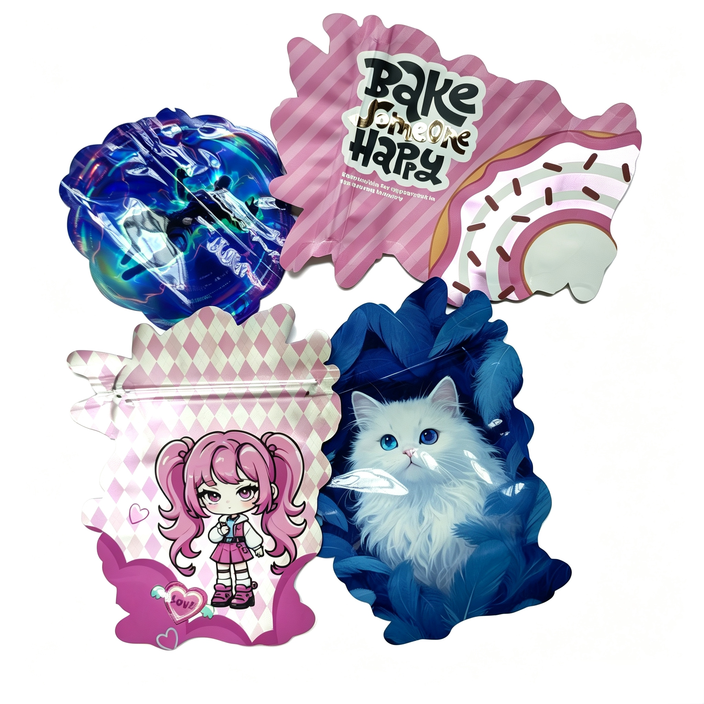

Soft Touch Varnish vs. Soft Touch PET: Cost & Application Differences

Soft-touch finishes have become the defining tactile signature of premium packaging. From luxury cosmetics to high-end food boxes, the velvety, skin-like feel signals quality before the consumer even opens the package. But when it comes to achieving this effect, there are two fundamentally different paths: soft-touch varnish and soft-touch PET film.
Both deliver the characteristic low-gloss, velvety surface. But their cost structures, application processes, durability, and sustainability profiles are worlds apart. This guide breaks down the key differences to help you choose the right solution for your packaging project.
1. What They Are: Two Different Approaches to the Same Sensation
🔴 Soft Touch Varnish (Coating)
- A liquid coating applied directly onto the printed substrate — typically a water-based polyurethane dispersion or UV-curable formulation [citation:9][citation:12].
- Applied in-line during the printing process, using standard coating units on gravure, flexo, or offset presses [citation:1].
- Creates the velvety feel through micro-texture additives in the coating formulation [citation:6].
🔴 Soft Touch PET Film (Lamination)
- A pre-manufactured BOPET film with a soft-touch coating layer applied at the film manufacturing stage [citation:2][citation:11].
- Applied off-line through a separate lamination process — the printed sheets are transferred to a laminating machine that bonds the film using heat and pressure [citation:1].
- Brands like Flex Films' FLEXPET™ F-STF offer BOPET films with integrated soft-touch surfaces, combining velvety texture with scratch and scuff resistance [citation:11].
2. Cost Comparison
The cost difference between these two finishes is significant, driven primarily by the application method and material structure.
🔴 Soft Touch Varnish
- Unit cost: Lower. The liquid coating is applied in-line during printing, eliminating a separate manufacturing step [citation:1].
- Raw material cost: Approximately ¥32–¥52 per kg for water-based PU resins, depending on formulation and supplier [citation:9][citation:12].
- Production speed: Faster — integrated into the printing run [citation:1].
- Premium relative to matte varnish: Roughly 20–30% higher than standard matte varnish, depending on formulation and application method.
🔴 Soft Touch PET Film
- Unit cost: Significantly higher. Requires off-line lamination with specialized soft-touch film material [citation:1].
- Raw material cost: The specialized soft-touch PET film is more expensive than standard lamination films [citation:4].
- Production speed: Slower — requires additional off-line processing time [citation:1].
- Premium relative to standard matte lamination: Soft-touch lamination typically adds 30–60% above standard matte lamination [citation:4]. In some market contexts, the cost premium is described as 25–40% above standard BOPP lamination [citation:7].
Cost Summary Table
- Soft Touch Varnish: Lower material cost, in-line application → more cost-effective for high-volume production.
- Soft Touch PET: Higher material cost, separate process → significantly more expensive per unit.
3. Tactile & Visual Performance
🔴 Soft Touch Varnish
- Provides a smooth, dry velvety feel [citation:1].
- Gloss level can be controlled through formulation — typical 60° gloss ranges from 0.5 to 4 depending on substrate [citation:8].
- Tactile depth is good but generally less pronounced than lamination [citation:1].
- Can be applied as a spot coating for selective premium effects.
🔴 Soft Touch PET
- Delivers the most pronounced, luxurious velvety feel — often described as "peach-skin" or suede-like [citation:1][citation:11].
- Ultra-low gloss (typically 5–8 gloss units) with excellent matte homogeneity [citation:11].
- Superior tactile depth and sensory differentiation — the finish signals premium quality at first touch [citation:1].
- High haze (>90%) combined with excellent reverse-print clarity for deep, rich graphics [citation:11].
4. Durability & Protection
🔴 Soft Touch Varnish
- Moderate durability — prone to burnishing and scuffing on edges with heavy handling [citation:1].
- Formulations can be enhanced with cross-linking agents to improve scuff resistance, heat resistance, and water resistance [citation:9][citation:12].
- Water-based formulations offer good recyclability [citation:1].
🔴 Soft Touch PET
- Excellent durability — high resistance to scuffing, scratching, and moisture due to the protective film barrier [citation:1][citation:11].
- Some advanced soft-touch PET films feature self-healing properties — minor scratches "heal" over time [citation:11].
- Heat and water resistant, maintaining the finish through demanding supply chains [citation:11].
5. Sustainability Considerations
🔴 Soft Touch Varnish
- Water-based formulations are generally easier to recycle than laminated films — the coating can be removed during the repulping process [citation:1].
- UV-curable soft-touch varnishes present different recycling profiles — check with your local recycling infrastructure.
- Some suppliers actively market water-based soft-touch coatings as "green packaging solutions" that replace traditional film lamination [citation:5].
🔴 Soft Touch PET
- Creates a multi-material structure (paper + PET film) that can complicate recycling [citation:1].
- The film must be separated from the fiber before recycling — not always feasible in standard recycling streams [citation:1].
- Note: Soft-touch lamination is generally not considered recyclable and may not be compatible with FSC eco-claims in most markets [citation:7].
6. Selection Guide
Choose Soft Touch Varnish when:
- Cost control is critical: High-volume, single-use packaging where the premium finish adds value but budget is limited [citation:1].
- Sustainability is a priority: Water-based coatings are more recyclable than laminated films [citation:1][citation:5].
- Speed to market: In-line application dramatically reduces lead times compared to lamination [citation:1].
- Complex die-cut designs: Spot coating can be applied selectively with precision [citation:1].
- Example applications: Mass-market retail boxes, product sleeves, promotional items, moderate-durability packaging.
Choose Soft Touch PET Film when:
- Maximum tactile luxury is required: The most pronounced velvety feel is essential to the brand experience [citation:1].
- Durability is paramount: Packaging must withstand heavy handling, shipping, or be reused [citation:1][citation:4].
- Budget allows: The perceived value and brand differentiation justify the higher cost [citation:4][citation:7].
- Scratch and scuff resistance are critical: The film barrier provides superior protection [citation:11].
- Example applications: Luxury cosmetics, premium electronics accessories, high-end spirits packaging, unboxing-focused brands [citation:4].
Conclusion
Soft touch varnish and soft touch PET film both deliver the velvety, low-gloss finish that signals premium quality. But they serve different purposes and different budgets.
Soft touch varnish is the pragmatic choice for cost-conscious, high-volume projects where sustainability and speed to market matter. It delivers a good tactile experience at a significantly lower cost.
Soft touch PET film is the luxury choice — superior tactile depth, unmatched durability, and the most pronounced sensory experience. The cost premium is justified by the perceived value and brand differentiation.
At Shenying Packing, we help brands select the right finish based on their product positioning, budget, and sustainability goals. If you're unsure which path is right for your next packaging project, our technical team is here to help.
Need help choosing between soft touch varnish and soft touch PET for your packaging?
Our team can evaluate your product requirements and recommend the right finish solution.
📧 Email: may.lee@shenyingpacking.com
💬 WhatsApp: +86 13424643780